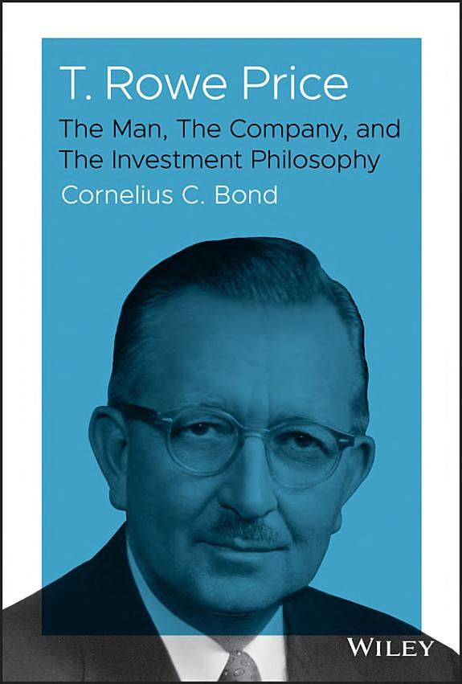

1960年，普林斯顿大学电机工程学士科尼利厄斯·邦德（Cornelius C. Bond）加入巴尔的摩的T. Rowe Price公司，起初担任科技行业分析师。次年，他受邀加入新地平线基金（New Horizons Fund）投资委员会，这只基金后来成为美国头十年里表现最好的共同基金之一。此后邦德升任副总裁，并接管公司当时资产规模最大的共同基金——成长股基金（Growth Stock Fund，资产超过10亿美元），1978年进入T. Rowe Price Associates董事会。在与创始人托马斯·罗威·普莱斯（Thomas Rowe Price Jr.）共事近十年之后，邦德于2019年由Wiley出版社出版了这部传记，利用公司内部未公开的档案和普莱斯本人的私人记录，还原这位"成长股投资之父"如何一手缔造了如今管理资产逾万亿美元的投资帝国。书中除了邦德本人的第一手叙述，还收录了另外两位曾与普莱斯共事、后来接手管理其基金的基金经理对投资环境变迁的回顾。
普莱斯1898年3月16日生于马里兰州格林登，1919年从斯沃斯莫尔学院拿到化学学位，最初在杜邦公司做化学工作，后转行进入投资界。他在巴尔的摩的Mackubin, Legg & Co.干了十二年，一路做到投资顾问部门主管，却因不认同按佣金抽成的销售模式而选择出走——他认为这种模式让经纪人的利益与客户利益相悖。1937年大萧条最深重的年份，他与三位同事在巴尔的摩创立T. Rowe Price & Associates，把公司做成当时罕见的按管理资产收取固定比例费用、而非按交易佣金收费的机构，并严格以受托人身份为客户管理账户。1950年，他推出T. Rowe Price Growth Stock Fund，专注投资那些处于早期成长阶段、管理层可靠、盈利增速高于平均水平的公司——即便这些公司当时的估值看起来偏贵。这只基金在成立后头十年创下了美国同类成长型股票基金里最好的业绩纪录，普莱斯也因此被《福布斯》称为"巴尔的摩智者"。1966年他出售了自己在公司的股份，1971年正式退休，1983年10月20日在巴尔的摩去世；公司则在1986年上市，1999年跻身标普500指数。
书中邦德记录了普莱斯反复向年轻分析师强调的一条经营准则："如果你善待客户，他终将在长期给你回报"（If you treat the customer right, he will reward you in the long term）。在邦德的描述里，普莱斯衡量自己成功与否的标准，不是管理规模做到多大或者个人赚到多少钱，而是投资业绩本身是否跑赢——这种把投资本身的胜负置于生意规模之上的取舍，构成了全书反复回到的核心张力。前高盛合伙人、Omega Advisors创始人利昂·库珀曼（Leon G. Cooperman）为本书撰写的推荐语称："这是一部关于一位讲求道德之人的传记，它既呈现了这个人本身，也剖析了他的成长股哲学……这本书让人得以窥见二十世纪最成功的投资大师之一。"（A fascinating biography of an ethical man which both reveals the individual and explores his Growth Stock philosophy...This book sheds light on one of the most successful investment gurus of the twentieth century.）
这本书目前没有中文版。它对投资读者的价值，不在于提供选股公式，而在于展示了"成长股投资"这套如今被视为常识的方法，在1930年代末的巴尔的摩是如何从一场关于商业模式的分歧——佣金制还是资产管理费制——里生长出来的。邦德本人从技术分析师做到董事会成员的路径，也让全书对T. Rowe Price内部如何培养和检验投资判断力，有着外部研究者写不出的具体细节，比如新地平线基金投资委员会的运作方式，以及成长股基金从零做到十亿美元规模过程中的决策取舍。全书272页，篇幅不算长，靠的是邦德作为公司内部人写下的具体细节，而非泛泛而谈的赞美。